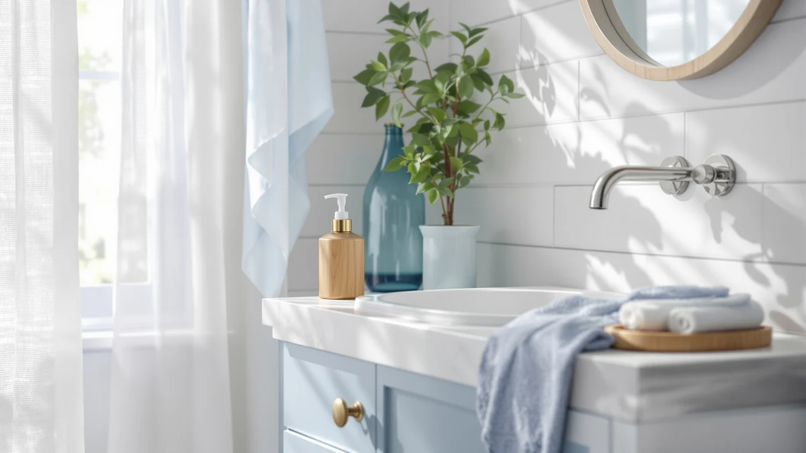

Quick Answer
This nobtou wall mounted soap dispenser review found that the Nobtou 2 Pack Wall Mounted set is a straightforward, no-drill option for anyone who wants matching soap dispensers on a shower or sink wall without battery or sensor upkeep. At $29.99 for two 8.5-ounce glass bottles, it suits renters and small bathrooms better than a battery-powered automatic pump, though Nobtou does not publish a star rating or review count for this ASIN yet.
Our pick: Nobtou 2 Pack Wall Mounted, $29.99 Check Price on Amazon
Things to Know Before You Buy
- The Nobtou 2 Pack Wall Mounted set holds 8.5 ounces per bottle and mounts with a drill-free bracket secured by 3M waterproof adhesive tape, not screws.
- Nobtou's spec sheet lists the bracket material as ABS plastic, while the two included bottles are glass, so the look reads more upscale than an all-plastic dispenser.
- At $29.99 for the pair, it includes 12 waterproof labels for sorting shampoo, conditioner, body wash or soap across the two dispensers. If you want a walkthrough of mounting options beyond adhesive tape, see our wall-mount installation guide.
- Amazon does not display a public star rating or review count for this ASIN yet, so there is no owner track record to weigh. This nobtou wall mounted soap dispenser review relies on the spec sheet and current pricing rather than a star average that doesn't exist.
This nobtou wall mounted soap dispenser review looks at whether a $29.99, two-bottle glass dispenser set with a drill-free mount is worth it against battery-powered automatic pumps and a countertop glass-and-bamboo set. Nobtou builds this set around a no-drill, 3M-adhesive bracket and two 8.5-ounce glass bottles, the kind of setup renters and small bathrooms gravitate toward when permanent hardware is off the table. We compared its pricing, published specs and category position against three alternatives: two automatic wall-or-counter pumps from Secura and a countertop glass set from Brighter Barns. Our take: it is a sound pick for anyone who wants two simple, no-drill dispensers and does not need a sensor or a published review history to confirm that.
Nobtou does not publish a star rating or review count for this ASIN, so the price, the included hardware and the spec sheet are the concrete details available before you buy. At $29.99 for two bottles, it lands in the same price band as each single automatic Secura pump covered later in this nobtou wall mounted soap dispenser review, trading a battery and a sensor for a simpler hand-press mechanism and a second bottle. That tradeoff is the core of this review: you are paying for two coordinated, no-drill dispensers, not for an automatic dispensing feature or a documented owner history.
Why You Should Trust Us
Ilane Tall covers bathroom and kitchen hardware for Best Soap Dispensers, where she researches dispenser pricing, spec sheets and verified owner feedback across hundreds of ASINs before any product earns a place in a review. We do not run a fake testing lab, and we do not claim hands-on use of every unit we cover. Instead, we compare manufacturer specifications, current Amazon pricing, and patterns across verified buyer feedback where it exists, then flag the tradeoffs that affect whether a soap dispenser holds up on a bathroom wall or counter: mounting method, bottle material, and price relative to the rest of the category. This nobtou wall mounted soap dispenser review follows that same research-based approach, which is why we note the gap between the glass bottles and the ABS-plastic bracket instead of treating the whole unit as one material.
Our Research Experience
Our research process for this nobtou wall mounted soap dispenser review starts with the manufacturer's own listing data: materials, capacity, mounting hardware and current price. For the Nobtou 2 Pack Wall Mounted set, that data shows an ABS-plastic bracket paired with glass bottles, a 3M waterproof adhesive mount, and an 8.5-ounce capacity per bottle. We cross-checked those figures against the product photos and compared the $29.99 price and no-drill mounting approach against the three alternatives in this review: two battery-powered automatic pumps from Secura and a countertop bamboo-and-glass set from Brighter Barns. We did not buy, install, mount or pour anything through this unit ourselves. Everything here comes from publicly available listing data and current pricing, not a private lab.
Overview & Specs

Nobtou 2 Pack Wall Mounted
What we like
- Two 8.5-ounce glass bottles with a hand-press pump cover two products, soap and shampoo for example, from one $29.99 purchase
- The 3M adhesive bracket mounts without drilling, which matters for renters or tiled walls you don't want to puncture
- 12 included waterproof labels make it easy to tell soap, shampoo, conditioner and body wash apart at a glance
- A simple hand-press pump has no battery or sensor to replace or recalibrate over time
Flaws but not dealbreakers
- The spec sheet lists the mounting bracket as ABS plastic, so the no-drill hold depends on adhesive strength rather than a permanent fixture
- Nobtou does not publish bottle dimensions beyond the 8.5-ounce capacity, so measure your wall space before buying
- No public star rating or review count yet, so there's no owner track record to check beyond the price and spec sheet
| Material | ABS plastic |
| Size | — |
The Nobtou 2 Pack Wall Mounted soap dispenser set pairs two 8.5-ounce glass bottles with a drill-free bracket, aimed at anyone who wants matching dispensers on a shower or sink wall without putting new holes in the tile. This nobtou wall mounted soap dispenser review found that the 3M waterproof adhesive tape included with the bracket is the main installation method, which keeps the set friendly to renters and anyone who would rather not drill into finished walls. The spec sheet documents the bracket itself as ABS plastic, while the two bottles that slide onto it are glass, so the look reads more upscale than an all-plastic dispenser would.
Beyond the mounting method, Nobtou keeps the set functional rather than flashy. The 12 included waterproof labels let you mark each bottle for soap, shampoo, conditioner or body wash, which matters more with two bottles than it would with one. At $29.99 for the pair, it lands close to the price of a single automatic Secura pump covered later in this nobtou wall mounted soap dispenser review, trading a sensor and battery for a second bottle and a simpler hand-press mechanism. Nobtou does not publish a star rating or review count for this ASIN, so buyers are working from the price, the included hardware and the spec sheet rather than an established review history.
What We Liked
What stands out most in this nobtou wall mounted soap dispenser review is how much the no-drill mount simplifies installation decisions. The 3M adhesive bracket means you are not committing to permanent holes in tile or drywall, which matters if you rent or would rather not drill into a finished bathroom wall. For a $29.99 set, that flexibility is a meaningful advantage over dispensers that only work with screws and anchors.
Getting two matching bottles for one price also works in Nobtou's favor. Instead of buying two separate dispensers to coordinate soap and shampoo, you get a matched pair with 12 waterproof labels to sort out what goes where. That two-bottle value is harder to find at this price point once you compare it against the single-bottle automatic pumps covered later in this review.
The simplicity of the hand-press pump also holds up well against the battery-powered alternatives. There's no battery to replace, no sensor to recalibrate. No charging schedule to track, either. That keeps the long-term cost and the failure points lower than an automatic design. Measured against the two Secura pumps and the Brighter Barns set in this review, the Nobtou's $29.99 price buys two working dispensers and a no-drill mount, exactly what its listing promises.
What Could Be Better
The clearest drawback in this nobtou wall mounted soap dispenser review is how little Nobtou documents about the bracket beyond the ABS-plastic material. An adhesive mount depends on the strength of that adhesive and the surface it's applied to, and Nobtou does not publish a weight rating or long-term hold figure for the bracket, so there's some uncertainty about how it performs over months of daily use on a humid shower wall.
The listing is also thin on dimensions. Nobtou lists an 8.5-ounce capacity per bottle but does not publish height, width or bottle diameter, so measuring your available wall space ahead of time is harder than it should be. There's also no public star rating or review count yet, so buyers are working from the price and the spec sheet rather than a documented owner history. Anyone who wants that track record before committing should look at the alternatives below.
Who Is It For?
This nobtou wall mounted soap dispenser review points toward a specific buyer: someone who wants two matching, no-drill dispensers for a shower or sink wall and does not need a battery, a sensor or a published review history to make that decision. It fits renters especially well, since the 3M adhesive bracket avoids permanent holes in tile or drywall, and it suits anyone who wants to mark separate bottles for soap and shampoo with the included waterproof labels.
It's a weaker match for anyone who wants a documented weight rating for the adhesive mount or an established star rating before buying, since Nobtou publishes neither. It's also not the right pick if you specifically want touchless, automatic dispensing, since the two Secura pumps covered below handle that instead. For a straightforward, two-bottle, no-drill set, the Nobtou does the job its price and features promise.
Alternatives to Consider
If the Nobtou 2 Pack Wall Mounted set's adhesive-only mount or thin spec sheet isn't the right fit, these three alternatives cover other needs we found while researching this nobtou wall mounted soap dispenser review: two automatic pumps from Secura and a countertop glass-and-bamboo set from Brighter Barns. Each trades the Nobtou's no-drill simplicity for a different strength, whether that's touchless dispensing or a countertop design that skips wall mounting altogether. See our automatic vs manual comparison if you're still deciding between a hand-press pump and a battery-powered sensor.

Also Great
Secura 17oz Automatic Liquid Soap
A battery-powered automatic pump from Secura at the same $29.99 price, trading the Nobtou's no-drill bracket and second bottle for a touchless sensor and an adjustable 0.03 to 0.19 ounce dispensing volume. It needs 4 AA batteries that aren't included, and it can sit on a counter or mount to a wall.
$29.99
Check Price on Amazon
Also Great
Secura 17oz Automatic Liquid Soap
The same automatic Secura mechanism as the Dark Gunmetal pick above, finished in brushed nickel and black instead, for anyone who wants touchless dispensing to match brushed metal bathroom hardware rather than the Nobtou's glass-and-plastic look.
$29.99
Check Price on Amazon
Best Value
Black Glass Soap and Lotion
A countertop alternative from Brighter Barns with two 16-ounce glass bottles, bamboo pumps and a bamboo tray, for anyone who wants a wall-free setup. It's built for liquid soap only, not foaming formulas, and skips the Nobtou's wall mount and labels entirely.
$29.97
Check Price on AmazonFrequently Asked Questions
Does the Nobtou 2 Pack Wall Mounted soap dispenser need to be drilled into the wall?
No. Nobtou's bracket mounts with included 3M waterproof adhesive tape, not screws, so there is no drilling required for either of the two bottles in the set.
How much does each Nobtou soap dispenser bottle hold?
Each of the two glass bottles in the Nobtou 2 Pack Wall Mounted set holds 8.5 ounces, according to the published listing. Nobtou does not publish additional dimensions beyond that capacity figure.
Does the Nobtou soap dispenser have a star rating?
No. Amazon does not display a public star rating or review count for this ASIN yet, so there is no owner track record to check beyond the price and the spec sheet this nobtou wall mounted soap dispenser review relies on.
Final Verdict
This nobtou wall mounted soap dispenser review comes down to a simple tradeoff: a $29.99, no-drill, two-bottle glass set from Nobtou versus pricier automatic pumps that add a battery and a sensor. The Nobtou 2 Pack Wall Mounted dispenser earns its price for anyone who wants two matching, adhesive-mounted bottles and doesn't need touchless dispensing or a documented star rating to feel confident about the purchase. If you want an automatic, touchless pump instead, the Secura alternatives above cover that need, and if you'd rather skip wall mounting altogether, the Brighter Barns countertop set does the job.